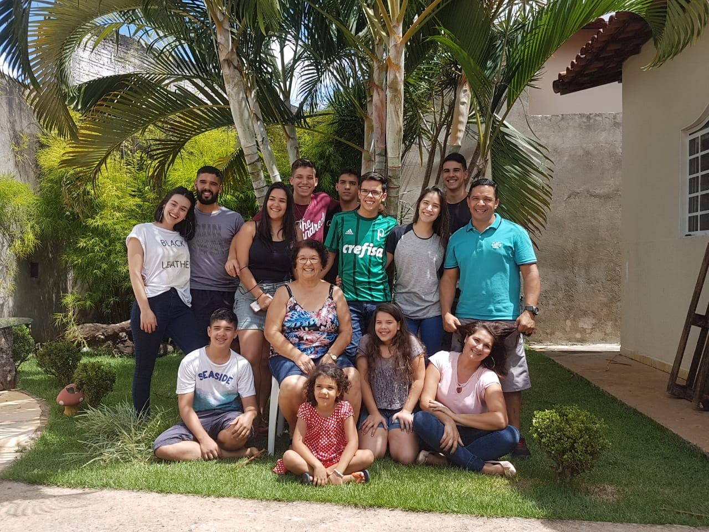

Olá, muito prazer! Eu sou Tiago e tenho 23 anos
Sou recém casado e minha esposa está gravida
Sou de Taguatinga, uma cidade satélite de Brasília
Sou o 2º de 8 filhos e essa é a minha família
Fiz todo o ensino infantil, fundamental e médio em escolas públicas da minha cidade
Sou formado em Educação Física pela Universidade de Brasília - UnB
Sou aluno do curso de Full Stack na Kenzie
Meus hobbies preferidos são
Todos os dias pela manhã acesso o site da Globo e leio as principais notícias do dia
Já estive na Replubica Tcheca, na Áustria e na Polônia